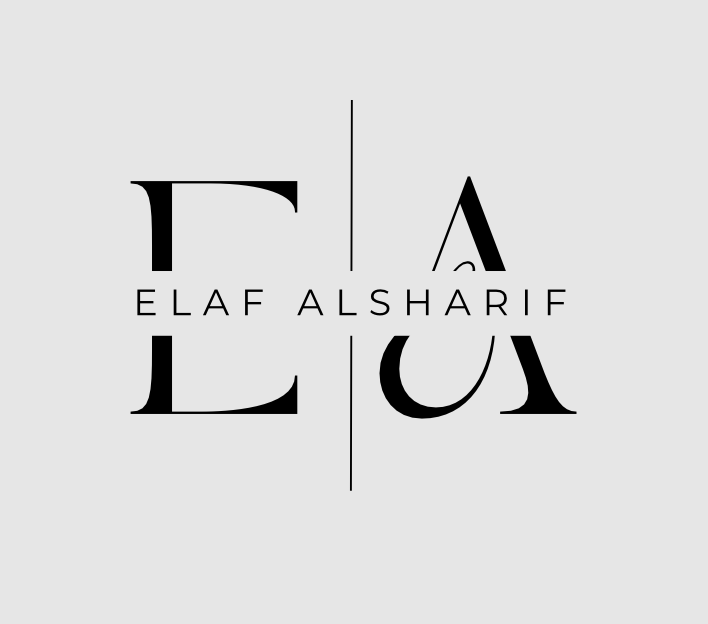
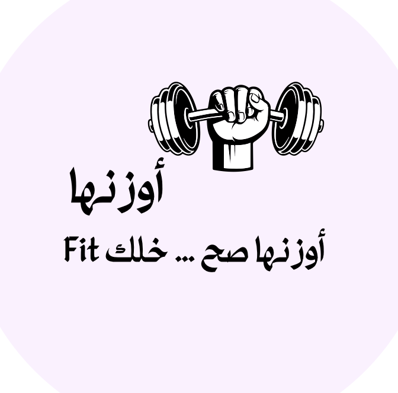

University of Jeddah
Bachelor of Software Engineering - GPA: 4.47
2022 – Present
Software Engineering Student | University of Jeddah

Motivated Software Engineering student with a strong foundation in software development and problem-solving. Passionate about building efficient applications and developing user-focused solutions through teamwork and hands-on projects.
Bachelor of Software Engineering - GPA: 4.47
2022 – Present

Developed a fitness application that helps users track health metrics, calculate BMI, and receive personalized calorie and workout recommendations based on fitness goals.
Tools: SwiftUI, Xcode, GitHub, Lucidchart, Notion
Work: Developed the core application logic, implemented daily health tracking features, generated progress summaries for users, and conducted testing and quality assurance to ensure accuracy and reliability.
Designed a centralized platform that helps users find suitable cars based on budget, income, and preferences, with smart filtering and personalized recommendations.
Tools: Figma, Google Forms
Work: Conducted user research and interviews to understand user needs, designed UI/UX flows and wireframes, and defined key system features to improve usability and support better decision-making.
Email: Elaf.alsharif@hotmail.com
Phone Number: 0547480677